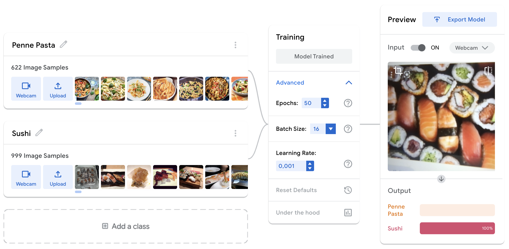
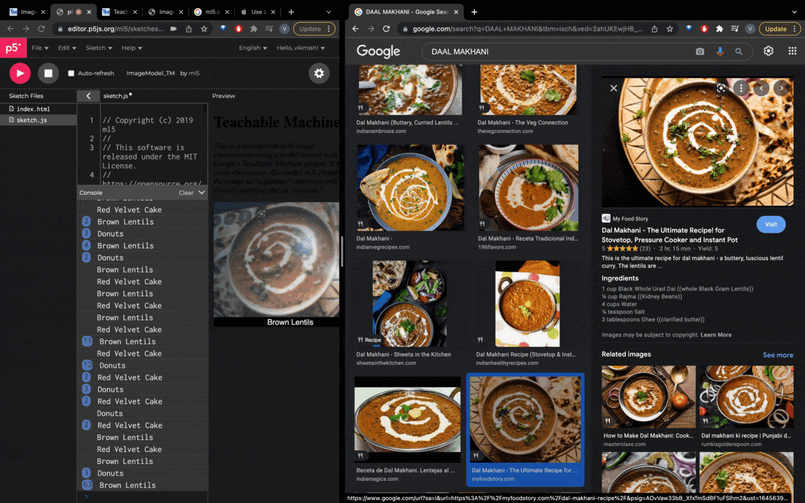
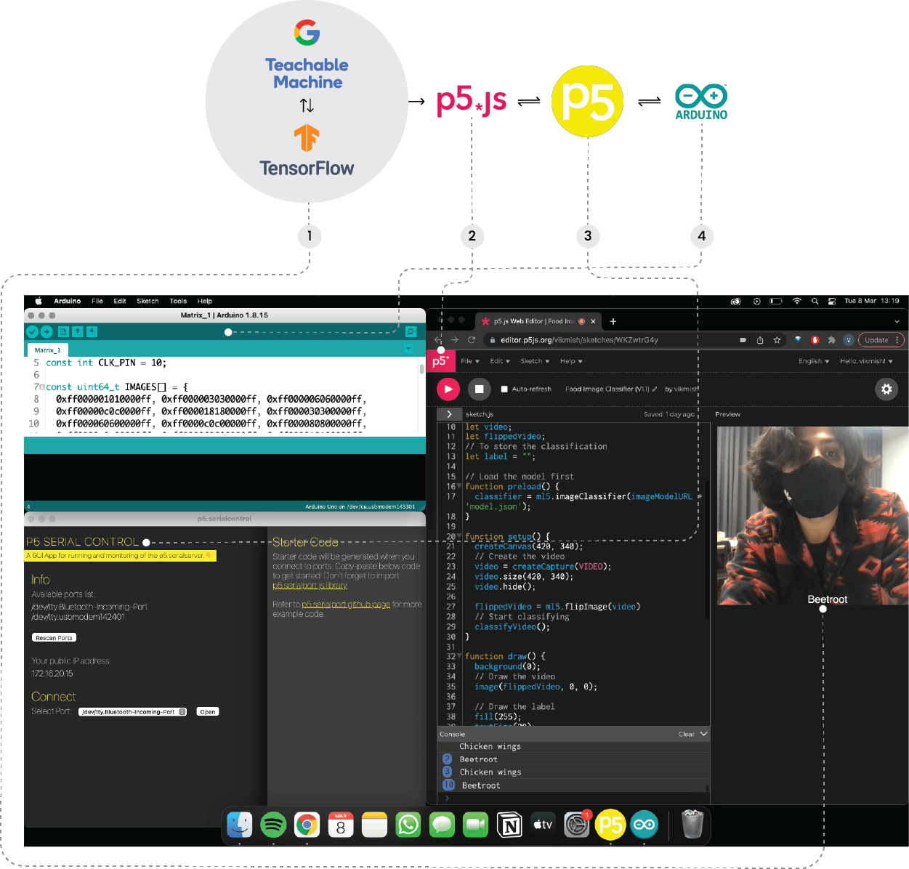

TERM II
Fishy Conversations
Why?
From the times of Jesus’s last supper we’ve moved to even smaller & smaller tables while ordering food online and sometimes even alone - somewhere along this journey we lost the understanding, intimacy and even appreciation towards our food.
Through the uncertain times of the pandemic, which are still quite existent, people around the world struggled for basic necessities and resources like water, food etc. Things will never be the same. This is the new normal.While a few MNCs and a few big stakeholders controlled what these resources looked like for us, we found our own personal ways to combat this shared empathy and disconnect across the globe. While we were moving away from dinner tables and family brunches beforehand, we reconfigured our relationships and came back to that table and brought things to the table. Literally and figuratively.We learnt from the disconnect and turned the one sided conversation into a two sided one. Where most of us found the sense of belonging and comfort was either at a Taco Tuesday, a friends-giving, a Bollywood dine-out or a shady tahin exchange in the broad day-light.
Fishy Conversations is a speculative project that’ll aim at reconfiguring our relationship and understanding of food into a society of the future using Machine Learning and AI. In simple words, we’ll be using various variables and data bases to create a conversation between us and our food. The intervention will use the stories and culture of an ingredient on our plate to help us understand what actually ends up on our plate. So that we could get out there again with a bigger heart and an even bigger plate.
PHASE 1
Gathering
Fig. 8.1 The first fishy conversation
To get started with the process, I asked a few of my friends and classmates to send me pictures of their plates at the end of every, meal for a week. The aim was to get a general idea of what people around me consume on a daily basis. The activity was more cumbersome than imagined because some people found the activity a little invasive. Getting to know what one ate everyday in the chat-box felt intimate in a very unusual way. Regardless, the results were interesting and I was able to create a dataset of 70 images to get started with.
To create a legitimate data set, certain open libraries and data from Kaggle and Imaging & Vision were used. The images involved a lot of manual segregation and cleaning which took 2 days at least. For the first iteration, the Image Model on Google Teachable Machines was used. The platform is undeniably great at demystifying the blackbox of Machine Learning and AI to the individuals that are just getting started.

Fig. 8.2 The first-level iteration with two classes
After creating a Teachable Machine model consisting of 40 classes, it was exported as a TensorFlow Module. This was then run and incorporated with a p5.js sketch by The Coding Train, using Javascript programming language. The sketch used the local webcam as an input to detect what it was being shown. The results were displayed alongside a video output + text on the preview screen. Initial tests involved pointing random visuals at the camera to check the responses. For the first 5 tests, it showed the results accurately. The model possessed 68% accuracy which is apparently not the worst to begin with in the world of Machine Learning and AI.

PHASE 2
Making Sense
This bit was mostly about experimentation and having fun with the data. Using certain functions in p5.js like let emoji, you can assign an emoticon when a certain value is detected in the sketch. As a part of the experimentation I tried assigning a few emojis to certain foods like burger, chicken wings etc. The results were funny and mildly problematic because it was detecting people with deeper skin tone as chicken wings or falafel and people with lighter tone as gyozas or dumplings. Slightly racist, I must say. 😉
PHASE 3
Communication
The process of gathering and making sense of the data (algorithmically) took over 2 weeks. The second phase involved figuring out the tools and agents that could be used to carry the detected subject, variable or message, which is currently undecided. The aim was to keep the first message easy to understand and communicate, which led to exploring multiple visual stimulus like LEDs and matrices. But before even jumping onto the electronics bit, a complex part to discover and understand was Serial communication. It is the process of sending data one bit at a time, sequentially, over a communication channel or computer bus.
This is essential when one is trying to communicate amongst multiple electronic devices or interfaces. In this case, to display a variable on LED matrix, the serial communication needs to happen between the origin i.e p5.js to the Arduino Micro-controller. This process needed a rigorous amount of research, sourcing and installation of libraries that make the communication happen. The article by ITP NYU and another one on Medium were a good starting point.

Fig. 8.3 The workflow across different platforms